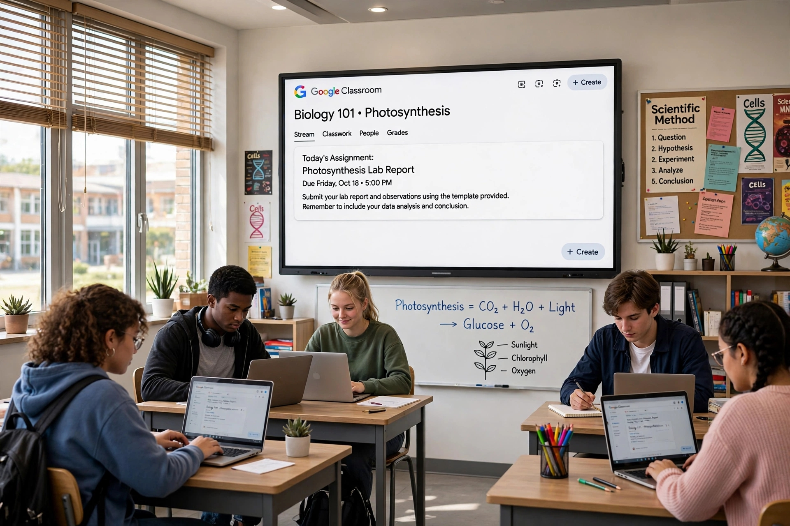

الاسم: نورهان علي محمود محمد يونس
الرقم الجامعي: 2500318
القسم: إدارة الأعمال
المقرر: تطبيقات الإنترنت والمنصات الإلكترونية
شهد قطاع التعليم تحولاً جذرياً في السنوات الأخيرة بفضل تطبيقات الإنترنت والمنصات الإلكترونية. ومن أبرز هذه المنصات منصة Google Classroom التي أطلقتها شركة جوجل عام 2014 كجزء من حزمة Google Workspace for Education.
تهدف المنصة إلى تبسيط عملية إنشاء الواجبات وتوزيعها وتصحيحها، وتسهيل التواصل بين المعلمين والطلاب في بيئة رقمية آمنة ومنظمة. أصبحت أهمية هذه المنصات واضحة بشكل كبير خلال جائحة كورونا، حيث انتقل التعليم من الفصول التقليدية إلى التعليم عن بعد. ووفقاً لإحصائيات جوجل، يستخدم أكثر من 150 مليون طالب ومعلم حول العالم منصة Google Classroom حالياً.
هي منصة مجانية لإدارة التعلم (LMS) تربط بين المعلم والطالب. لا يحتاج المستخدم سوى حساب جوجل (Gmail) للبدء.
1. تنظيم الواجبات: إنشاء واجب وتحديد تاريخ تسليم وإرفاق ملفات.
2. التواصل الفعال: يوجد قسم Stream مثل صفحة فيسبوك.
3. التكامل مع أدوات جوجل: Docs, Sheets, Slides, Meet, Drive.
4. توفير الوقت والورق: كل شيء رقمي.
5. الأمان والتحكم: المعلم يتحكم من يستطيع النشر.

الوصول في أي وقت ومن أي جهاز، قائمة مهام To-do list، وإمكانية كتابة تعليق خاص للمدرس.
متابعة التقدم، تغذية راجعة، إنشاء اختبارات عبر Forms، وعقد حصص عبر Meet.
| المثال | المادة / المشروع | الاستفادة من المنصة |
|---|---|---|
| مثال 1 | إدارة الأعمال - تحليل SWOT لشركة SHEIN | رفع التحليل وتسليم الواجب إلكترونياً |
| مثال 2 | مشروع التخرج | استخدام Docs للتعديل الجماعي و Meet للاجتماعات |
| مثال 3 | المدارس الحكومية في مصر | الربط مع بنك المعرفة والفيديوهات التعليمية |
في الختام، تعتبر Google Classroom نموذجاً ناجحاً لتطبيق الإنترنت في خدمة التعليم. فهي تجمع بين البساطة والقوة وتوفر حلاً مجانياً وفعالاً.